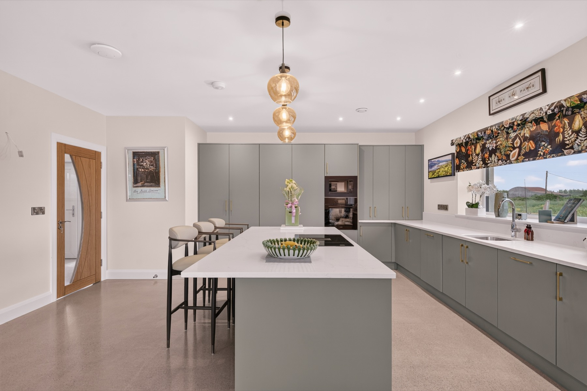
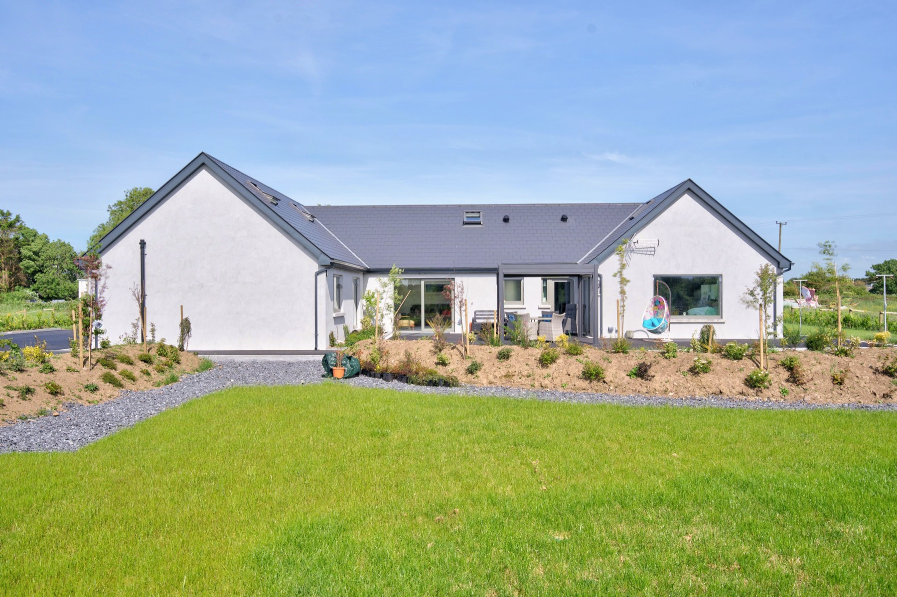

Open-Plan Living
A flowing kitchen, dining and lounge filled with light and framed by countryside views.

The Lodge
Stone, light and calm — a contemporary lodge built for togetherness, just minutes from Galway city.
Skylark Lodge is a spacious, architect-finished home set behind its own gates in Glennascaul, Oranmore — a peaceful pocket of County Galway just fifteen minutes from the heart of Galway city.
Built and finished to a five-star standard, the lodge pairs natural stone and polished concrete floors with brass details, soft natural light and warm, neutral tones. It's a home that feels both contemporary and deeply restful — the kind of place where mornings start slowly and evenings stretch on around the table.
With four ensuite bedrooms, generous open-plan living and a designer kitchen at its heart, Skylark Lodge comfortably sleeps the whole family or group of friends. Outside, landscaped gardens and a sun-trap patio look out over open fields and big West-of-Ireland skies.

Designed to be lived in
Every space has been thought through, from the statement island kitchen to the deep sofas and the gallery-hung hallway. Quality runs throughout — marble bathrooms, brass fittings, underfloor warmth and proper attention to the details that make a stay feel effortless.
Explore the accommodation
The setting
Skylark Lodge sits in true countryside — green fields, birdsong and open sky — yet you're moments from the M6/M18 motorways, Oranmore village and Galway city. It's the rare best-of-both: total peace when you want it, and the buzz of Galway whenever you fancy it.
Discover Galway & the areaWhy guests love it
A flowing kitchen, dining and lounge filled with light and framed by countryside views.
Walk-in rainfall showers, marble tiling and brass details in every bedroom.
A fully equipped island kitchen, ready for everything from coffee to a Sunday roast.
Landscaped gardens, a sunny patio and secure off-road parking, all to yourselves.
Stay connected, stream your favourites, or switch off entirely — your call.
A warm local welcome and genuine care, with Breda on hand throughout your stay.
Call or WhatsApp Breda to check availability and book direct — no fees, no middleman.